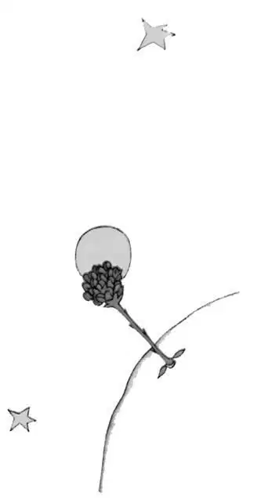
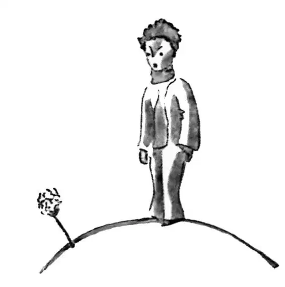
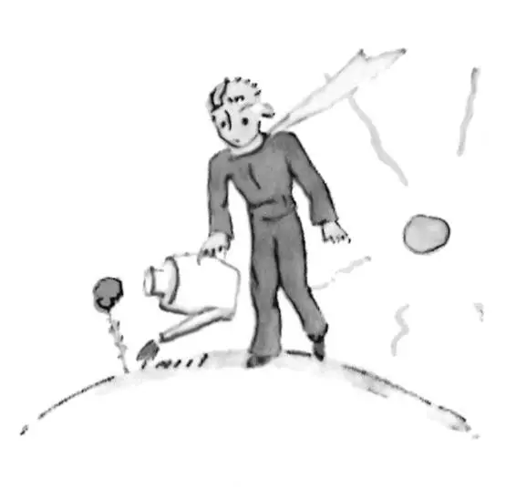
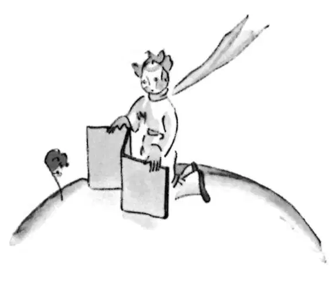

CHAPTER 8
第八章
—the rose arrives at the little prince's planet
——玫瑰来到小王子的星球
I soon learned to know this flower better. On the little prince's planet the flowers had always been very simple. They had only one ring of petals; they took up no room at all; they were a trouble to nobody. One morning they would appear in the grass, and by night they would have faded peacefully away. But one day, from a seed blown from no one knew where, a new flower had come up; and the little prince had watched very closely over this small sprout which was not like any other small sprouts on his planet. It might, you see, have been a new kind of baobab.
不久，我对这花有了进一步的了解。在小王子的星球上，花一直以来都是非常简单的。它们只有一层花瓣，而且一点也不会占什么地方，所以不会给任何人带来麻烦。早上，它们出现在草丛中，到了晚上就会静静地凋谢。可是有一天，不知道是从哪里吹来的种子，长出了一种新的花。小王子非常仔细地观察，发现这小嫩苗与星球上其他的新芽都不一样。你瞧，它可能是猴面包树的一个新品种。
The shrub soon stopped growing, and began to get ready to produce a flower. The little prince, who was present at the first appearance of a huge bud, felt at once that some sort of miraculous apparition must emerge from it. But the flower was not satisfied to complete the preparations for her beauty in the shelter of her green chamber. She chose her colours with the greatest care. She adjusted her petals one by one. She did not wish to go out into the world all rumpled, like the field poppies. It was only in the full radiance of her beauty that she wished to appear. Oh, yes! She was a coquettish creature! And her mysterious adornment lasted for days and days.
小灌木很快就停止了生长，开始做好开花的准备。巨大的花蕾第一次出现的时候，小王子便来到它的面前。他立刻感到某种不可思议的特异景象一定会从中出现。可是这花并不满足在绿阴丛中完成孕育美丽的过程。她小心翼翼地选择她的颜色。她一片一片地调整自己的花瓣。她不愿像罂粟花一样，满脸皱褶地来到这个世界。只有让她的美光彩照人，她才愿意来到这个世界上。噢，是啊！她是那么婀娜多姿的生灵！她神秘的装扮日复一日，永不停歇。
Then one morning, exactly at sunrise, she suddenly showed herself.
于是，一天早上，就在日出之时，她突然出现了。

And, after working with all this painstaking precision, she yawned and said:
经过这番精心准备，她打着哈欠说道：
"Ah! I am scarcely awake. I beg that you will excuse me. My petals are still all disarranged..."
“啊！我还没完全醒来。我恳求你原谅我。我的花瓣还是乱糟糟的……”
But the little prince could not restrain his admiration:
可小王子按捺不住他的爱慕之情，说道：
"Oh! How beautiful you are!"
“噢！你多美啊！”
"Am I not?" the flower responded, sweetly. "And I was born at the same moment as the sun..."
“怎么会不美呢？”花儿甜甜地回答道，“我是和太阳同时出生的哦……”

The little prince could guess easily enough that she was not any too modest—but how moving—and exciting—she was!
小王子很容易就能猜出她一点也不太谦虚——可是，她那么动人——那么令人兴奋！
"I think it is time for breakfast," she added an instant later. "If you would have the kindness to think of my needs—”
“我想，该吃早饭了。”片刻，她又说道，“你能否好心考虑一下我的需求——”

And the little prince, completely abashed, went to look for a sprinkling-can of fresh water. So, he tended the flower.
小王子感到特别羞愧，就去找了一个喷壶，装了些淡水来。就这样，他照料着这朵花。
So, too, she began very quickly to torment him with her vanity—which was, if the truth be known, a little difficult to deal with. One day, for instance, when she was speaking of her four thorns, she said to the little prince:
也就这样，这朵花很快开始以她的虚荣心来折磨小王子。但如果真相大白，这还真的有点棘手。比如，有一天，说起她的四根刺时，她对小王子说：
"Let the tigers come with their claws!"
“让老虎张着爪子来吧！”
"There are no tigers on my planet," the little prince objected. "And, anyway, tigers do not eat weeds."
“我的星球上没有老虎。”小王子反驳说。“而且，不管怎样，老虎都不吃草。”
"I am not a weed," the flower replied, sweetly.
“我又不是草。”花儿柔声回答道。
"Please excuse me..."
“请原谅我……”
"I am not at all afraid of tigers," she went on, "but I have a horror of drafts. I suppose you wouldn't have a screen for me?"
“我一点也不怕老虎，”她继续说，“但我害怕风。我想你是不会给我弄来一扇屏风吧？”

"A horror of drafts—that is bad luck, for a plant," remarked the little prince, and added to himself, "This flower is a very complex creature..."
“害怕风——对一株植物来说，那确实很不幸。”小王子说道，接着又自言自语道：“这朵花还真是很复杂……”
"At night I want you to put me under a glass globe. It is very cold where you live. In the place I came from—”
“晚上我想让你把我放在玻璃罩下面。你这地方真是冷。我来的那个地方——”
But she interrupted herself at that point. She had come in the form of a seed. She could not have known anything of any other worlds. Embarassed over having let herself be caught on the verge of such a naive untruth, she coughed two or three times, in order to put the little prince in the wrong.
可是说到这里，她打住了。她是由一粒种子变来的。她本来就不可能知道什么别的世界。把自己逼到这样一个天真的谎言里，她感到很窘迫，于是就咳嗽了两三声，好让小王子觉得是他的错。
"The screen?"
“屏风呢？”
"I was just going to look for it when you spoke to me..."
“我刚想去找，可你又和我说……”
Then she forced her cough a little more so that he should suffer from remorse just the same.
于是她又挤出了几声咳嗽，同样是为了让小王子自责。
So the little prince, in spite of all the good will that was inseparable from his love, had soon come to doubt her. He had taken seriously words which were without importance, and it made him very unhappy.
因此，尽管小王子对她的爱满是善意，他还是很快就怀疑起她来。他把那些无足轻重的话看得很重，这让他很不开心。
"I ought not to have listened to her," he confided to me one day. "One never ought to listen to the flowers. One should simply look at them and breathe their fragrance. Mine perfumed all my planet. But I did not know how to take pleasure in all her grace. This tale of claws, which disturbed me so much, should only have filled my heart with tenderness and pity."
一天，他向我吐露心扉说：“我本不该听信她的话。一个人绝不该相信花儿的话。他只要看一看它们，闻一闻它们的香气就可以了。我那朵花的香气溢满整个星球。可我却不知如何欣赏她全部的美。老虎爪子那件事让我非常不安，可本该让我内心充满同情和怜悯才是。”
And he continued his confidences:
他继续向我吐露他的心事：
"The fact is that I did not know how to understand anything! I ought to have judged by deeds and not by words. She cast her fragrance and her radiance over me. I ought never to have run away from her... I ought to have guessed all the affection that lay behind her poor little strategems. Flowers are so inconsistent! But I was too young to know how to love her..."
“事实是，我以前不知道怎么去看待事物！我该从行动，而非言语来判别是非。她向我释放她的香气，展示她的美艳。我绝不该从她身边逃离……我本该猜出她可怜的小把戏后头隐藏的全部情感。花儿是这样表里不一啊！可我当时太年轻，还不知道怎么去爱她……”